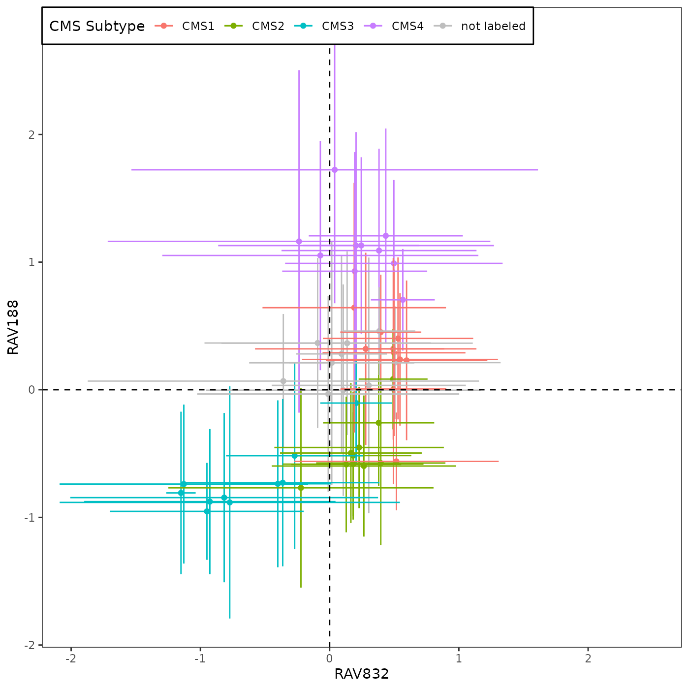
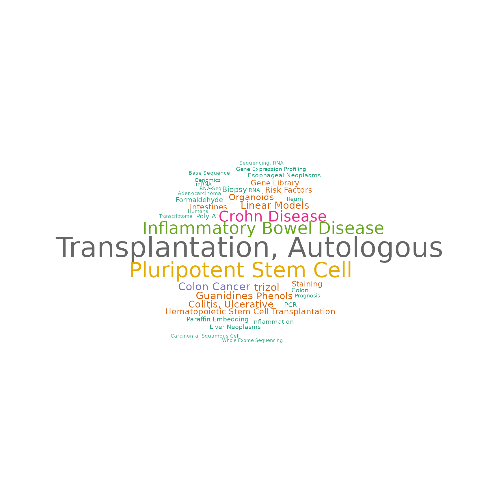
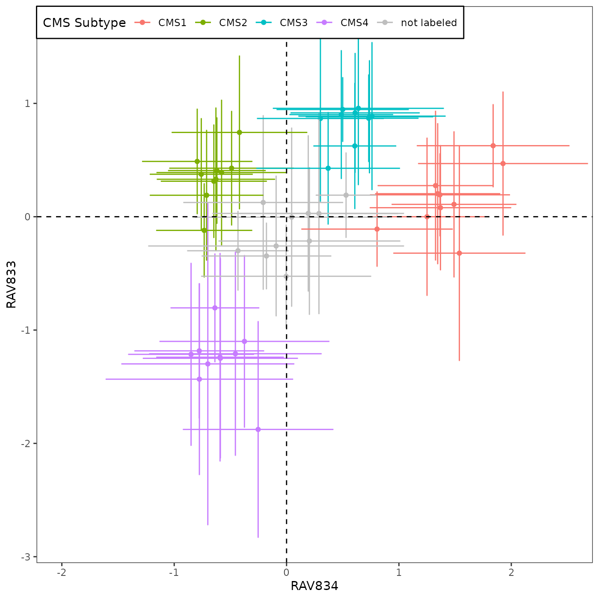

CRC Subtyping using Sample Scores by RAVs
Sehyun Oh
2022-03-24
Source:vignettes/CRC/CRC_Subtyping.Rmd
CRC_Subtyping.RmdSetup
In this vignette, we perform colorectal cancer (CRC) subtyping analysis using GenomicSuperSignature and benchmark it against Figure 4A of the CRC paper (Ma et al.).
Load packages
if (!"GenomicSuperSignaturePaper" %in% installed.packages())
devtools::install_github("shbrief/GenomicSuperSignaturePaper")
suppressPackageStartupMessages({
library(Biobase)
library(tidyverse)
library(GenomicSuperSignature)
library(GenomicSuperSignaturePaper)
})RAVmodel
RAVmodel <- getModel("C2", load=TRUE)
RAVmodel
## class: PCAGenomicSignatures
## dim: 13934 4764
## metadata(8): cluster size ... version geneSets
## assays(1): RAVindex
## rownames(13934): CASKIN1 DDX3Y ... CTC-457E21.9 AC007966.1
## rowData names(0):
## colnames(4764): RAV1 RAV2 ... RAV4763 RAV4764
## colData names(4): RAV studies silhouetteWidth gsea
## trainingData(2): PCAsummary MeSH
## trainingData names(536): DRP000987 SRP059172 ... SRP164913 SRP188526
version(RAVmodel)
## [1] "1.1.1"CRC validation datasets
CRC paper used colorectal cancer datasets from curatedCRCData package. Eight of them are for training and ten are for validation.
load("data/eSets/setNames.RData")
setNames
## [1] "GSE12225.GPL3676_eset" "GSE12945_eset" "GSE13067_eset"
## [4] "GSE13294_eset" "GSE14095_eset" "GSE14333_eset"
## [7] "GSE17536_eset" "GSE17538.GPL570_eset" "GSE2109_eset"
## [10] "GSE21510_eset" "GSE21815_eset" "GSE26682.GPL570_eset"
## [13] "GSE26682.GPL96_eset" "GSE33113_eset" "GSE39582_eset"
## [16] "TCGA.COAD_eset" "TCGA.RNASeqV2_eset" "NHS.HPFS_eset"
## Load validation samples
for (set in setNames) {
load(paste0("data/eSets_new/", set, '.RData'))
}CRC subtyping with PCSSs
CRC paper actually used both training and validation datasets (total of 18) for Figure 4A. So here, we reproduce the same plot using all 18 datasets.
Briefly, this plot summarizes the sample scores assigned to 3,567 tumor samples from 18 CRC studies. The samples in each of 18 datasets, assigned to either (i) one of the 4 previously proposed CMS subtypes by CRC Subtyping Consortium or (ii) not assigned to a CMS subtype (so 5 x 18 = 90 total groups), are represented by the mean (point) and standard deviation (error bar) of the sample scores.

If we use only 10 validation datasets:
CRC subtyping with RAVs
To evaluate the performance of RAVs compared to PCSSs, we searched for colon cancer associated RAVs in three different ways.
We identified two RAVs, RAV1575 and RAV834, that have the highest Pearson correlation coefficients with PCSS1 and PCSS2, respectively (0.59 and 0.56). (detail)
We ran Kruskal-Wallis rank sum test between CMS subtypes and RAV-assigned scores. Two RAVs with the highest chi-square, RAV834 and RAV833, were selected for further testing. (detail)
We calculated validation scores for 18 colon cancer datasets used in CRC paper and collected top 10 validated RAVs from each dataset. We summarized the frequency of different RAVs validating each dataset without any additional filtering criteria and selected the top 2 most frequently validated RAVs, RAV188 and RAV832, which were captured 14 and 10 times, respectively. (detail)
In this section, we draw colon cancer subtype plots with these pairs of RAVs and look up MeSH terms, enriched pathways, and related studies associated with them.
Most similar to PCSS1/PCSS2
For plotting with RAVs, you can decide whether to use all 18 datasets or only 10 validation datasets by setting val_only variable before running R/Fig4A_plotting.R script. Here, we are using only 10 validation datasets.
val_only <- TRUE # FALSE for 18 datasets, TRUE for 10 validation datasetsWe also provide the ‘metadata + sample score’ table for R/Fig4A_plotting.R script.
df.results <- readRDS("data/SummaryForFig4.rds")RAV1575 and RAV834 are identified as the RAVs most similar to PCSS1/2 in this vignette.
sampleScore1 <- 1575
sampleScore2 <- 834
source("R/Fig4A_plotting.R", print.eval = TRUE)Wordcloud
MeSH terms associated with RAV1575 (sampleScore1) and RAV834 (sampleScore2)
drawWordcloud(RAVmodel, sampleScore1)
drawWordcloud(RAVmodel, sampleScore2)GSEA
Enriched pathways for RAV1575 (sampleScore1) and RAV834 (sampleScore2)
annotateRAV(RAVmodel, sampleScore1)
## Description NES pvalue qvalues
## 1 SCHUETZ_BREAST_CANCER_DUCTAL_INVASIVE_UP 2.821779 1e-10 1.695489e-09
## 2 SMID_BREAST_CANCER_NORMAL_LIKE_UP 2.691255 1e-10 1.695489e-09
## 3 BOQUEST_STEM_CELL_UP 2.645755 1e-10 1.695489e-09
## 4 VECCHI_GASTRIC_CANCER_ADVANCED_VS_EARLY_UP 2.595530 1e-10 1.695489e-09
## 5 MCLACHLAN_DENTAL_CARIES_UP 2.588020 1e-10 1.695489e-09
annotateRAV(RAVmodel, sampleScore2)
## Description NES pvalue
## 1 ALTEMEIER_RESPONSE_TO_LPS_WITH_MECHANICAL_VENTILATION 2.817613 1e-10
## 2 MCLACHLAN_DENTAL_CARIES_UP 2.592022 1e-10
## 3 WIELAND_UP_BY_HBV_INFECTION 2.486090 1e-10
## 4 ZHANG_RESPONSE_TO_IKK_INHIBITOR_AND_TNF_UP 2.336875 1e-10
## 5 POOLA_INVASIVE_BREAST_CANCER_UP 2.321100 1e-10
## qvalues
## 1 5.317905e-08
## 2 5.317905e-08
## 3 5.317905e-08
## 4 5.317905e-08
## 5 5.317905e-08Studies
Studies associated with RAV1575 (sampleScore1) and RAV834 (sampleScore2)
findStudiesInCluster(RAVmodel, sampleScore1, studyTitle = TRUE)
## studyName PC Variance explained (%)
## 1 SRP052740 5 3.79
## 2 SRP068976 3 6.11
## 3 SRP090849 4 3.79
## 4 SRP126672 5 2.46
## title
## 1 RNAseq changes in pre MAPKi treatment and post MAPKi resistance Melanomas
## 2 RNA-seq of 50 paired hepatocellular carcinoma
## 3 Next-gen RNA sequencing of human osteosarcoma tumors
## 4 Integrative molecular and clinical analysis of intrahepatic cholangiocarcinoma reveals two prognostic subclassees
findStudiesInCluster(RAVmodel, sampleScore2, studyTitle = TRUE)
## studyName PC Variance explained (%)
## 1 SRP010181 5 1.67
## 2 SRP087576 14 0.99
## title
## 1 Derivation of HLA types from shotgun sequence datasets
## 2 Adaptation of a RAS pathway activation signature from FF to FFPE tissues in colorectal cancer (FFPE RNA-Seq I)Highest validation score
Validation
Before applying validate function, any NA or Inf values in CRC datasets were removed and the expression matrix was centered.
load("data/eSets/setNames.RData") # 18 CRC datasets
validated_ind_all <- vector(mode = "list", length = length(setNames))
names(validated_ind_all) <- setNames
for (set in setNames) {
eSet <- get(set)
exprs <- Biobase::exprs(eSet) %>% rmNaInf
exprs <- apply(exprs, 1, function(x) x - mean(x)) %>% t
val_all <- validate(exprs, RAVmodel)
validated_ind_all[[set]] <- validatedSignatures(val_all, RAVmodel,
num.out = 10,
indexOnly = TRUE)
}We combined the top validated RAVs from all 18 studies and checked the frequency of them. Any RAV that appeared more often means they are consistently associated with the common feature of CRC datasets.
Top row is RAV number and the bottom row is the frequency of it making top validation. Because there were 18 datasets, the maximum frequency of showing up is 18. RAV188 and RAV832 are captured 14 and 10 times, respectively, as top 10 validated RAVs.
## Top 10 validated
validated_ind_all %>% unlist %>% table %>% sort(., decreasing = TRUE)
## .
## 188 832 833 1575 338 725 324 438 2 312 684 1032 21 192 220 468
## 14 10 9 9 8 8 6 6 5 5 5 5 4 4 4 4
## 579 1076 1166 2538 119 187 758 834 884 1467 1694 1843 189 316 504 516
## 4 4 4 4 3 3 3 3 3 3 3 3 2 2 2 2
## 595 868 981 1008 1387 27 40 58 61 152 153 170 190 1016 1165 1187
## 2 2 2 2 2 1 1 1 1 1 1 1 1 1 1 1
## 1468 1497 1726 2489 2506
## 1 1 1 1 1
## Top 5 validated
lapply(validated_ind_all, function(x) x[1:5]) %>%
unlist %>% table %>% sort(., decreasing = TRUE)
## .
## 188 338 832 833 2 1575 312 324 725 220 438 684 834 1032 2538 21
## 9 8 7 6 5 5 4 4 4 3 3 3 3 3 3 2
## 192 468 1076 58 119 152 189 316 516 579 758 981 1165 1166 1387
## 2 2 2 1 1 1 1 1 1 1 1 1 1 1 1Top validated RAVs
sampleScore1 <- 832
sampleScore2 <- 188
source("R/Fig4A_plotting.R", print.eval = TRUE)
Wordcloud
MeSH terms associated with RAV832 (sampleScore1) and RAV188 (sampleScore2)
drawWordcloud(RAVmodel, sampleScore1)
drawWordcloud(RAVmodel, sampleScore2)
GSEA
Enriched pathways for RAV832 (sampleScore1) and RAV188 (sampleScore2)
annotateRAV(RAVmodel, sampleScore1)
## Description NES
## 1 SABATES_COLORECTAL_ADENOMA_UP 3.024180
## 2 HSIAO_LIVER_SPECIFIC_GENES 2.902520
## 3 GRADE_COLON_AND_RECTAL_CANCER_UP 2.815155
## 4 REACTOME_EUKARYOTIC_TRANSLATION_ELONGATION 2.685421
## 5 REACTOME_SRP_DEPENDENT_COTRANSLATIONAL_PROTEIN_TARGETING_TO_MEMBRANE 2.667746
## pvalue qvalues
## 1 1e-10 1.142379e-08
## 2 1e-10 1.142379e-08
## 3 1e-10 1.142379e-08
## 4 1e-10 1.142379e-08
## 5 1e-10 1.142379e-08
annotateRAV(RAVmodel, sampleScore2)
## Description NES pvalue qvalues
## 1 SCHUETZ_BREAST_CANCER_DUCTAL_INVASIVE_UP 2.881810 1e-10 4.692434e-09
## 2 VECCHI_GASTRIC_CANCER_ADVANCED_VS_EARLY_UP 2.831062 1e-10 4.692434e-09
## 3 LIM_MAMMARY_STEM_CELL_UP 2.709338 1e-10 4.692434e-09
## 4 ANASTASSIOU_MULTICANCER_INVASIVENESS_SIGNATURE 2.669321 1e-10 4.692434e-09
## 5 BOQUEST_STEM_CELL_UP 2.642661 1e-10 4.692434e-09Studies
Studies associated with RAV832 (sampleScore1) and RAV188 (sampleScore2)
findStudiesInCluster(RAVmodel, sampleScore1, studyTitle = TRUE)
## studyName PC Variance explained (%)
## 1 SRP010181 2 8.67
## 2 SRP029880 1 20.16
## 3 SRP068591 4 3.03
## 4 SRP073267 9 2.16
## 5 SRP123604 9 0.66
## title
## 1 Derivation of HLA types from shotgun sequence datasets
## 2 Gene expression profiling study by RNA-seq in colorectal cancer
## 3 Gene signature in sessile serrated polyps identifies colon cancer subtype
## 4 Impact of RNA degradation on fusion detection by RNA-seq
## 5 Immune Profiling of Premalignant Lesions in Patients with Lynch Syndrome
findStudiesInCluster(RAVmodel, sampleScore2, studyTitle = TRUE)
## studyName PC Variance explained (%)
## 1 ERP013206 5 1.79
## 2 ERP023272 5 2.61
## 3 ERP023550 1 31.81
## 4 SRP029880 4 5.67
## 5 SRP077046 2 13.19
## 6 SRP149847 1 19.84
## title
## 1 Whole transcriptome profiling of Esophageal adenocarcinoma and Barrett's
## 2 RNA-seq of formalin-fixed, paraffin-embedded uninvolved terminal ileal tissue obtained from ileo-colic resection surgeries of Crohn’s disease and control patients
## 3 RNA-seq of human intestinal organoids colonized with E. coli and other immature intestinal tissues
## 4 Gene expression profiling study by RNA-seq in colorectal cancer
## 5 A functional genomics predictive network model identifies regulators of inflammatory bowel disease: Mount Sinai Hospital (MSH) Population Specimen Collection and Profiling of Inflammatory Bowel Disease
## 6 Differences in tissue immune cell populations following hematopoietic stem cell transplantation in Crohn's disease patientsBest explaining metadata
We find the metadata-associated RAVs using Kruskal-Wallis Rank Sum Test. Further detail can be found here.
sampleScore1 <- 834
sampleScore2 <- 833
val_only <- TRUE # FALSE for 18 datasets, TRUE for 10 validation datasets
source("R/Fig4A_plotting.R", print.eval = TRUE)
Wordcloud
MeSH terms associated with RAV834 (sampleScore1) and RAV833 (sampleScore2)
drawWordcloud(RAVmodel, sampleScore1)
drawWordcloud(RAVmodel, sampleScore2)GSEA
Enriched pathways for RAV834 (sampleScore1) and RAV833 (sampleScore2)
annotateRAV(RAVmodel, sampleScore1)
## Description NES pvalue
## 1 ALTEMEIER_RESPONSE_TO_LPS_WITH_MECHANICAL_VENTILATION 2.817613 1e-10
## 2 MCLACHLAN_DENTAL_CARIES_UP 2.592022 1e-10
## 3 WIELAND_UP_BY_HBV_INFECTION 2.486090 1e-10
## 4 ZHANG_RESPONSE_TO_IKK_INHIBITOR_AND_TNF_UP 2.336875 1e-10
## 5 POOLA_INVASIVE_BREAST_CANCER_UP 2.321100 1e-10
## qvalues
## 1 5.317905e-08
## 2 5.317905e-08
## 3 5.317905e-08
## 4 5.317905e-08
## 5 5.317905e-08
annotateRAV(RAVmodel, sampleScore2)
## Description NES pvalue qvalues
## 1 SENGUPTA_NASOPHARYNGEAL_CARCINOMA_DN 3.159253 1e-10 3.026853e-09
## 2 COLDREN_GEFITINIB_RESISTANCE_DN 2.994733 1e-10 3.026853e-09
## 3 HOLLERN_EMT_BREAST_TUMOR_DN 2.974745 1e-10 3.026853e-09
## 4 VECCHI_GASTRIC_CANCER_ADVANCED_VS_EARLY_DN 2.957895 1e-10 3.026853e-09
## 5 WAMUNYOKOLI_OVARIAN_CANCER_LMP_UP 2.953454 1e-10 3.026853e-09Studies
Studies associated with RAV834 (sampleScore1) and RAV833 (sampleScore2)
findStudiesInCluster(RAVmodel, sampleScore1, studyTitle = TRUE)
## studyName PC Variance explained (%)
## 1 SRP010181 5 1.67
## 2 SRP087576 14 0.99
## title
## 1 Derivation of HLA types from shotgun sequence datasets
## 2 Adaptation of a RAS pathway activation signature from FF to FFPE tissues in colorectal cancer (FFPE RNA-Seq I)
findStudiesInCluster(RAVmodel, sampleScore2, studyTitle = TRUE)
## studyName PC Variance explained (%)
## 1 SRP010181 3 3.88
## 2 SRP094781 9 2.28
## 3 SRP101290 3 2.34
## 4 SRP148497 2 7.61
## 5 SRP152577 3 2.74
## 6 SRP172499 3 6.93
## title
## 1 Derivation of HLA types from shotgun sequence datasets
## 2 Molecular portraits of tumor mutational and micro-environmental sculpting by immune checkpoint blockade therapy
## 3 Tracing the temporal-spatial transcriptomic landscapes of the human fetal digestive tract by single cell RNA-seq analysis [fetal tissues]
## 4 Prediction Model of Recurrence in Endometrioid Endometrial Cancer
## 5 PyMINEr Finds Gene and Autocrine/Paracrine Networks from Human Islet scRNAseq
## 6 Proteogenomic characterization of human early-onset gastric cancerManuscript Table
Supplementary Table 5
This table contains the top 10 validated RAVs for 18 CRC datasets.
CRC_validation_df <- data.frame(matrix(unlist(validated_ind_all),
nrow = length(validated_ind_all),
byrow = TRUE),
stringsAsFactors=FALSE)
rownames(CRC_validation_df) <- names(validated_ind_all)
colnames(CRC_validation_df) <- paste0("validated_RAV_", 1:10)
CRC_validation_df[1:4, 1:4]
## validated_RAV_1 validated_RAV_2 validated_RAV_3
## GSE12225.GPL3676_eset 312 21 468
## GSE12945_eset 312 981 832
## GSE13067_eset 188 833 324
## GSE13294_eset 1575 833 192
## validated_RAV_4
## GSE12225.GPL3676_eset 684
## GSE12945_eset 684
## GSE13067_eset 220
## GSE13294_eset 58Session Info
sessionInfo()
## R version 4.1.2 (2021-11-01)
## Platform: x86_64-pc-linux-gnu (64-bit)
## Running under: Ubuntu 20.04.3 LTS
##
## Matrix products: default
## BLAS/LAPACK: /usr/lib/x86_64-linux-gnu/openblas-pthread/libopenblasp-r0.3.8.so
##
## locale:
## [1] LC_CTYPE=en_US.UTF-8 LC_NUMERIC=C
## [3] LC_TIME=en_US.UTF-8 LC_COLLATE=en_US.UTF-8
## [5] LC_MONETARY=en_US.UTF-8 LC_MESSAGES=en_US.UTF-8
## [7] LC_PAPER=en_US.UTF-8 LC_NAME=C
## [9] LC_ADDRESS=C LC_TELEPHONE=C
## [11] LC_MEASUREMENT=en_US.UTF-8 LC_IDENTIFICATION=C
##
## attached base packages:
## [1] stats4 stats graphics grDevices utils datasets methods
## [8] base
##
## other attached packages:
## [1] GenomicSuperSignaturePaper_1.1.1 GenomicSuperSignature_1.3.6
## [3] SummarizedExperiment_1.24.0 GenomicRanges_1.46.1
## [5] GenomeInfoDb_1.30.1 IRanges_2.28.0
## [7] S4Vectors_0.32.3 MatrixGenerics_1.6.0
## [9] matrixStats_0.61.0 forcats_0.5.1
## [11] stringr_1.4.0 dplyr_1.0.8
## [13] purrr_0.3.4 readr_2.1.2
## [15] tidyr_1.2.0 tibble_3.1.6
## [17] ggplot2_3.3.5 tidyverse_1.3.1
## [19] Biobase_2.54.0 BiocGenerics_0.40.0
## [21] BiocStyle_2.22.0
##
## loaded via a namespace (and not attached):
## [1] colorspace_2.0-3 ggsignif_0.6.3 rjson_0.2.21
## [4] ellipsis_0.3.2 rprojroot_2.0.2 circlize_0.4.14
## [7] XVector_0.34.0 GlobalOptions_0.1.2 fs_1.5.2
## [10] clue_0.3-60 rstudioapi_0.13 farver_2.1.0
## [13] ggpubr_0.4.0 bit64_4.0.5 fansi_1.0.2
## [16] lubridate_1.8.0 xml2_1.3.3 codetools_0.2-18
## [19] doParallel_1.0.17 cachem_1.0.6 knitr_1.37
## [22] jsonlite_1.8.0 broom_0.7.12 cluster_2.1.2
## [25] dbplyr_2.1.1 png_0.1-7 BiocManager_1.30.16
## [28] compiler_4.1.2 httr_1.4.2 backports_1.4.1
## [31] assertthat_0.2.1 Matrix_1.4-0 fastmap_1.1.0
## [34] cli_3.2.0 htmltools_0.5.2 tools_4.1.2
## [37] gtable_0.3.0 glue_1.6.2 GenomeInfoDbData_1.2.7
## [40] rappdirs_0.3.3 Rcpp_1.0.8.3 carData_3.0-5
## [43] cellranger_1.1.0 jquerylib_0.1.4 pkgdown_2.0.2
## [46] vctrs_0.3.8 iterators_1.0.14 xfun_0.30
## [49] rvest_1.0.2 lifecycle_1.0.1 rstatix_0.7.0
## [52] zlibbioc_1.40.0 scales_1.1.1 ragg_1.2.2
## [55] hms_1.1.1 parallel_4.1.2 RColorBrewer_1.1-2
## [58] curl_4.3.2 ComplexHeatmap_2.10.0 yaml_2.3.5
## [61] memoise_2.0.1 sass_0.4.0 RSQLite_2.2.10
## [64] stringi_1.7.6 highr_0.9 desc_1.4.1
## [67] foreach_1.5.2 filelock_1.0.2 shape_1.4.6
## [70] rlang_1.0.2 pkgconfig_2.0.3 systemfonts_1.0.4
## [73] bitops_1.0-7 evaluate_0.15 lattice_0.20-45
## [76] labeling_0.4.2 bit_4.0.4 tidyselect_1.1.2
## [79] magrittr_2.0.2 bookdown_0.25 R6_2.5.1
## [82] generics_0.1.2 DelayedArray_0.20.0 DBI_1.1.2
## [85] pillar_1.7.0 haven_2.4.3 withr_2.5.0
## [88] abind_1.4-5 RCurl_1.98-1.6 modelr_0.1.8
## [91] crayon_1.5.0 car_3.0-12 wordcloud_2.6
## [94] utf8_1.2.2 BiocFileCache_2.2.1 tzdb_0.2.0
## [97] rmarkdown_2.13 GetoptLong_1.0.5 grid_4.1.2
## [100] readxl_1.3.1 blob_1.2.2 reprex_2.0.1
## [103] digest_0.6.29 textshaping_0.3.6 munsell_0.5.0
## [106] bslib_0.3.1